Hyperloop
the project
SCENARIO
SpaceX’s Hyperloop is an ultra high-speed, cross-country mode of terrestrial
transportation. It’s been sometime now and the system is running successfully.
The company now wants to roll out a mobile application that will allow its
passengers to book their trips easily.
This project aims at visualizing, and designing a cohesive identity system of a mobile application that, in future, will be
used by people to book their rides in SpaceX’s Hyperloop. The design is speculative and the theme for this project
centers around the idea of future. It aims to communicate the ideas such as speed, future, scientific nature and precision.
BACKGROUND
A Hyperloop is a proposed mode of
passenger and/or freight transportation,
first used to describe an open-source
vactrain design released by a joint team
from Tesla and SpaceX.
It is a sealed tube or system of tubes
through which a pod may travel free of airresistance or friction conveying people orobjects at high speed while being very
efficient.
You could travel from Los Angeles to SF
Bay Area, 350 mile corridor, at 760 mph.
That’s just
35 minutes!
IDENTITY SYSTEM
COLOR PALETTE
Inspired by the bluish-indigo flame that is associated with high energy combustion engines (as that of the rocket), I chose
the following color palettes. Black and white are primary colors, but I explored different options in terms of accent/
highlight colors.
Secondary colors
Primary colors
100%
100%
80%
80%
60%
60%
40%
40%
20%
20%
Color Combinations
Color Gradient
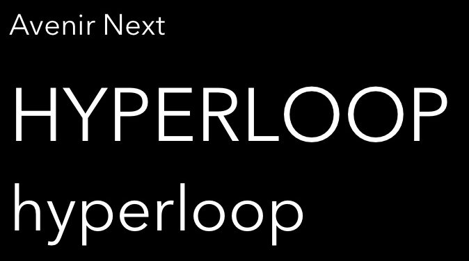
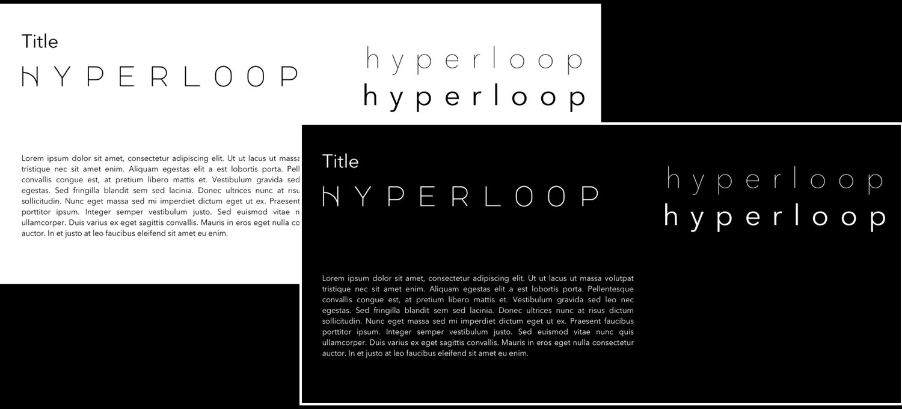
TYPOGRAPHY
major mono display
hyperloop
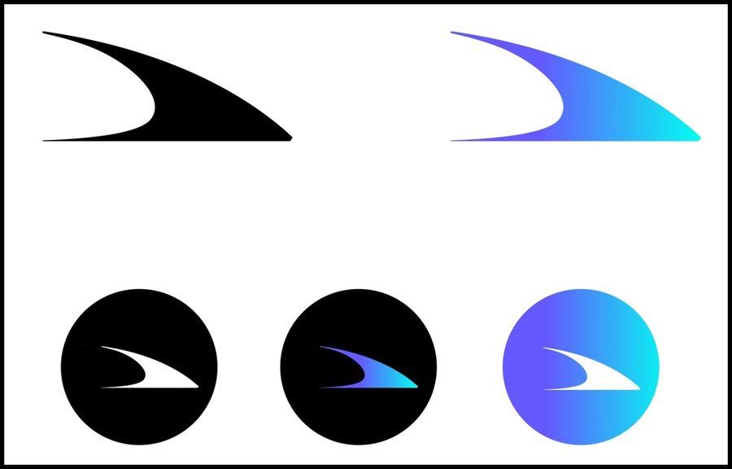
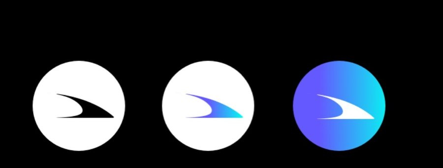
LOGO & ALTERNATIVE MARKS
I based my logo on the side view of a train, with tapering edges that give a feel of an extremely high speed. It employsthe use of negative space as well as figure-ground principles to achieve the desired look. Alternatively, it looked like thealphabet 'h’ and hence provides an alternative meaning. I played around with colors a lot to identify both main logo andalternative marks.
APP SCREEN DESIGNS
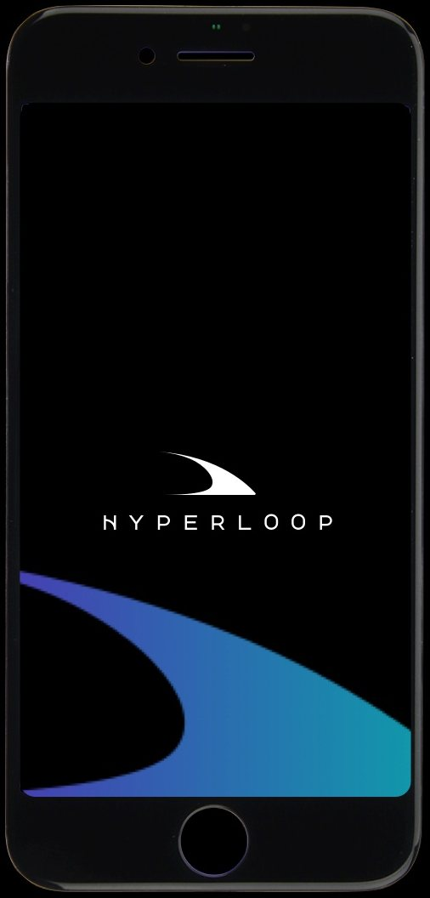
I tried to ensure that the app carried the same feel as my design system. Also, I integrated logos and marks within the
app screens in different ways, which we’ll see as we go further.
This home screen shows the the expanded
usage of the logo, which alternatively looks
like a path that goes far back
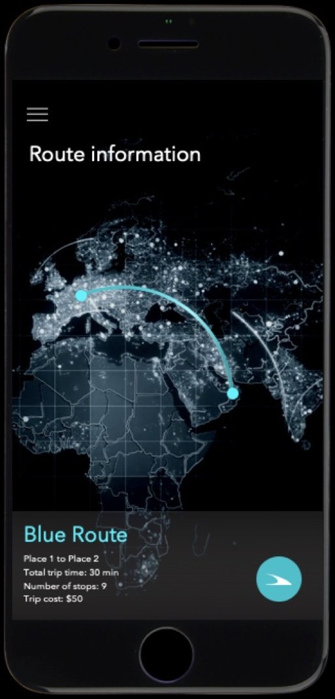
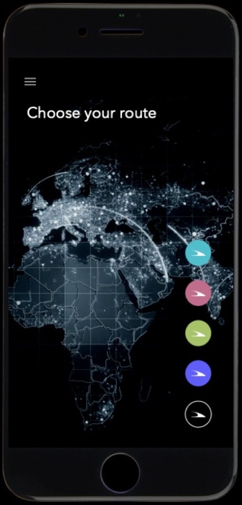
Displaying route informationwith starting and final stations,total trip time etc.
Choosing other routes (Use
of floating button)
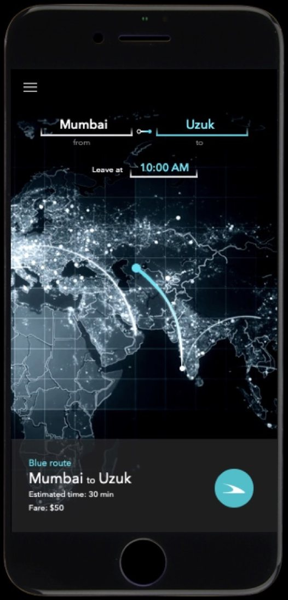
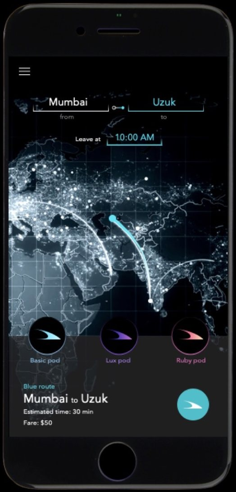
Information about a route
based on specific source and
target stations.
Choosing the type of car/pod
Informations displayed includes
route color(s), estimated time,
estimated fare etc.
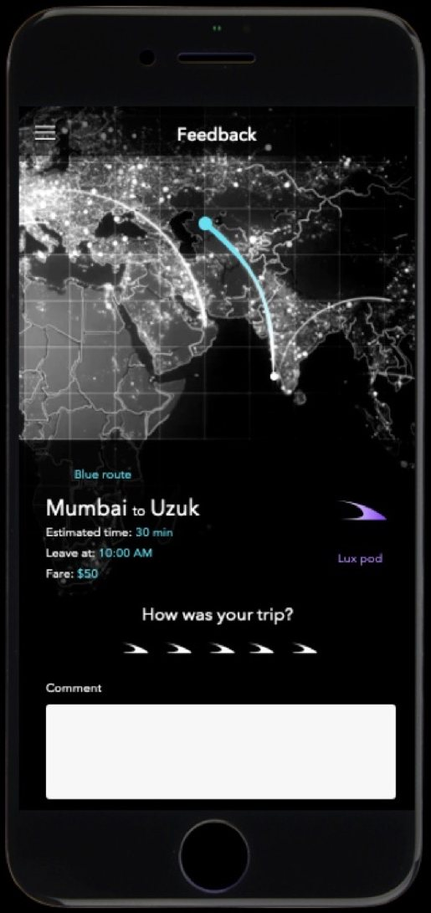
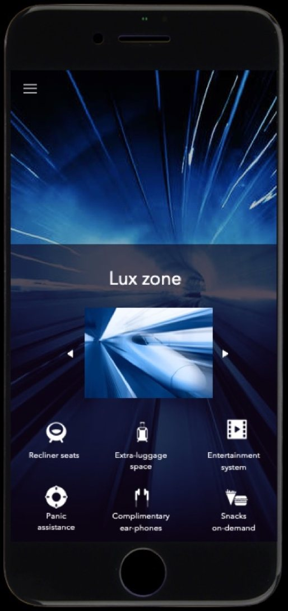
Car profile in this case is
called pod profile or coach
profile. It describes theamenities each hyperlooppod/coach has.
This shows a feedback screen.
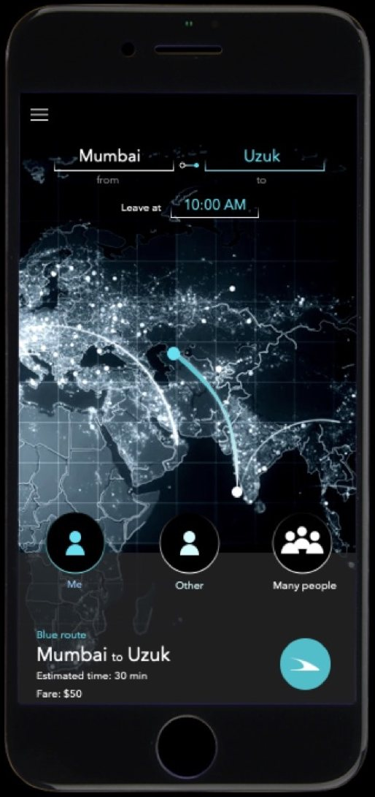
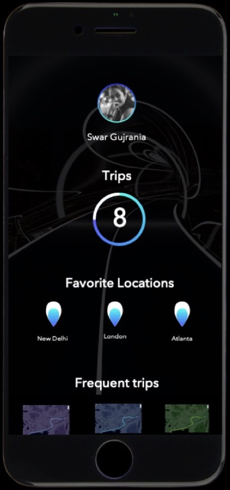
This shows a rider profile
screen.
This is a ride request
scenario
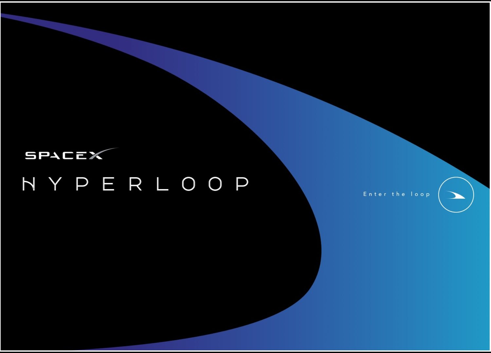
WEBSITE LANDING SCREEN
COMMUNICATION MATERIAL
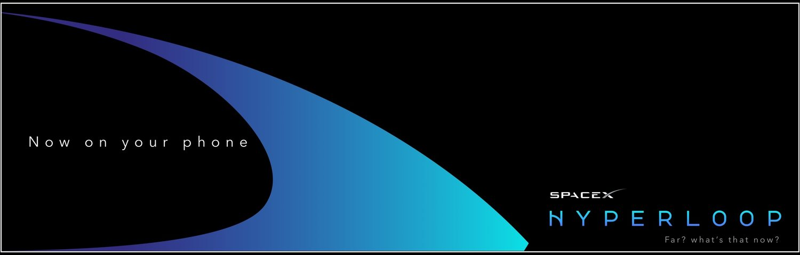
HORIZONTAL ADVERTISEMENT
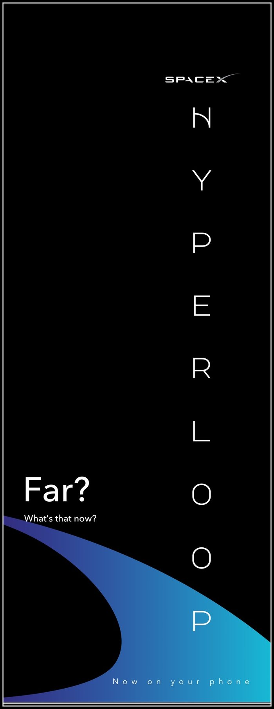
VERTICAL ADVERTISEMENT
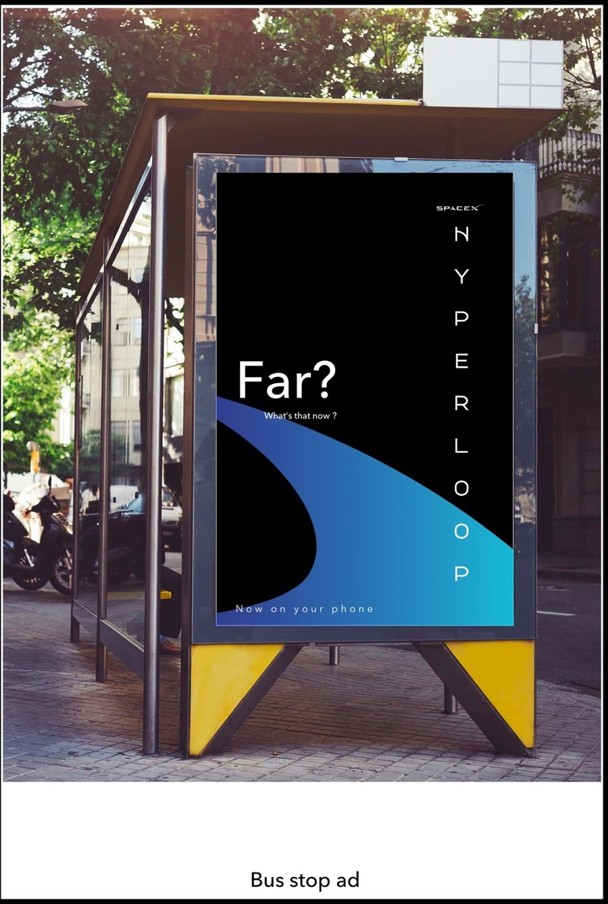
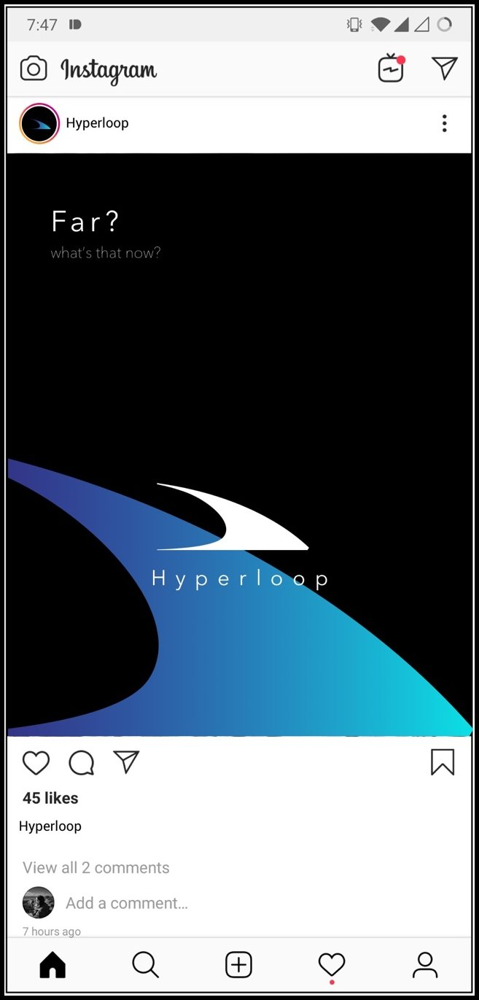
BUS STOP ADVERTISEMENT
INSTAGRAM ADVERTISEMENT